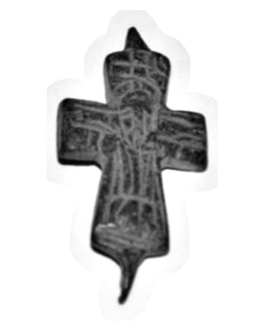

Catalog › CE-0275 · BUR2022-3
Valvă de encolpion de bronz cu Răstignirea, cat. 3, Muzeul Bursa
sec. IX–XII (801–1200) · loc necunoscut · Muzeul Arheologic Bursa (Bursa Arkeoloji Müzesi), Turcia, inv. 2009/39
single valve of a reliquary cross, bronz; c. IX–XII (801–1200); find spot unknown; kept at Muzeul Arheologic Bursa (Bursa Arkeoloji Müzesi), Turcia.


Identificare
- Categorie
- Valvă izolată
- Material
- Bronz
- Tehnică
- Turnare în relief; Gravare (incizie)
- Stare
- Fragmentară
- Dimensiuni
- Î 48 × L 28 × Gr 9 mm
Iconografie
- Descriere avers
- Cruce latină turnată; pe suprafață o scenă figurată, uzată, în care se înțelege reprezentarea lui Hristos răstignit; decorul e făcut prin incizie și relief jos.
- Limba
- Fără inscripție
Datare și atribuire
- Datare
- sec. IX–XII (801–1200)
Descoperire
- Context
- Colecție (fără context)
- Coordonate
- 40.1826° N, 29.0665° E
- Precizia locului
- Loc de păstrare (loc de descoperire incert)
Păstrare și referințe
- Colecție
- Muzeul Arheologic Bursa (Bursa Arkeoloji Müzesi), Turcia
- Nr. inventar
- 2009/39
- Bibliografie
- U. Elyiğit, Bursa Arkeoloji Müzesi’ndeki Madeni Haç Örnekleri, în „Art-Sanat”, 18, 2022, p. 173–200 [Elyiğit 2022], p. 186, cat. nr. 3, reprodusă la G. 5 și G. 6 (desen) (p. 187). DOI: 10.26650/artsanat.2022.18.1090632
- Figura
- G. 5; G. 6 (desen)
- Planșe
- Elyiğit 2022, p. 187
- Analogii
- Detroit Institute of Arts, inv. 26.57, 26.63, 26.73, 26.74 (sec. X–XII); Corint, Davidson 1952, pl. 110 (după Elyiğit 2022)
- Observații
- Datare generală a grupului de haçuri din articol, după Elyiğit: sec. IX–XII; piesa nu are datare proprie. Din cele două părți ale crucii s-a păstrat una singură; balamalele și inelul de suspendare lipsesc. Intrat în muzeu prin achiziție, 07.04.2008. Autorul indică drept analogii piesele de la Detroit Institute of Arts (inv. 26.57, 26.63, 26.73, 26.74, sec. X–XII) și cele de la Corint (Davidson 1952, pl. 110). Locul descoperirii nu e cunoscut cu precizie; punctul de pe hartă marchează locul de păstrare (Muzeul Arheologic Bursa), nu locul descoperirii. Coordonate: nu sunt date în sursă.
Citare: Corpus Encolpiorum, CE-0275, Valvă de encolpion de bronz cu Răstignirea, cat. 3, Muzeul Bursa, --root/piese/BUR2022-3/ (accesat 2026-10-20).